DataEditR is an R package that makes it easy to
interactively view, enter, filter and edit data. The data editor is a
shiny application built on the MIT-licensed Tabulator JavaScript library, so it
stays fast with large datasets, and it can edit tables stored in a
database as well as data in your R session. In this vignette we will
explore the key features that are available through the
data_edit() function.
Preparation
In order to get started with DataEditR, we will need to install the package from CRAN and load it into our current R session:
install.packages("DataEditR")
library(DataEditR)If you would like to use the development version of DataEditR it can be installed directly from GitHub:
devtools::install_github("DillonHammill/DataEditR")1. Data Visualisation
Simply supply your data in the form of a matrix, data.frame, tibble
or data.table to data_edit() to view it in an interactive
table. For example, if we wanted to take a look at the
mtcars dataset:
data_edit(mtcars)
The data editor has four parts:
- the header with the Cancel button, the name and size of the data, and the Done button;
- the toolbar to open other data, undo and redo changes, show or hide columns, see active filters, find values, review changes, see the code that reproduces your edits, export the data and see the keyboard shortcuts;
- the grid, which shows the row indices on the left,
a type badge (
abcfor text,123for numbers,date,T/Ffor logicals) next to each column name, and a filter box under each column name; - the status bar showing how many rows and columns are on screen, a summary of the selected cells and a summary of your changes.
The data editor will open in an RStudio "dialog" box by
default, but can be optionally displayed in the RStudio viewer pane or a
web browser by setting viewer to "pane" or
"browser" respectively. The size of the dialog box is
controlled by viewer_width and
viewer_height.
data_edit(mtcars,
viewer = "browser")Row names (such as the car names in mtcars) are moved
inside the table to a frozen row names column so that they
can be edited, and the row indices are always displayed on the left-hand
side to aid navigation. Only the visible rows are drawn in the browser,
so scrolling through 100,000 rows is as smooth as scrolling through
10.
Once you are finished, close the data editor by hitting the
Done button in the top right corner and the edited data
will be returned. If you wish to discard all changes made to the data,
select the Cancel button in the top left corner and the
unedited data will be returned instead (or the value supplied to the
cancel argument).
2. Data Import
data_edit() can read in any form of tabular data from
file for viewing and editing. By default data_edit() will
use read.csv from the utils package to read in
files, but this can be changed to any reading function by supplying the
name of the function to the read_fun argument. If you need
to pass any additional arguments to your reading function, these can be
supplied as a named list to the read_args argument.
mtcars <- data_edit("mtcars.csv",
read_fun = "read.csv",
read_args = list(header = TRUE,
row.names = 1))
head(mtcars)#> mpg cyl disp hp drat wt qsec vs am gear carb
#> Mazda RX4 21.0 6 160 110 3.90 2.620 16.46 0 1 4 4
#> Mazda RX4 Wag 21.0 6 160 110 3.90 2.875 17.02 0 1 4 4
#> Datsun 710 22.8 4 108 93 3.85 2.320 18.61 1 1 4 1
#> Hornet 4 Drive 21.4 6 258 110 3.08 3.215 19.44 1 0 3 1
#> Hornet Sportabout 18.7 8 360 175 3.15 3.440 17.02 0 0 3 2
#> Valiant 18.1 6 225 105 2.76 3.460 20.22 1 0 3 1The name of an object in your R session can also be supplied as a
character string, e.g. data_edit("mtcars").
2.1 Open other data without leaving the editor
The Open menu in the toolbar switches to other data
without having to close the data editor. You can load any data frame,
matrix or dbplyr table from your R session by name, upload
a file (read with read_fun and read_args) or
create a new empty table with a chosen number of rows and columns.
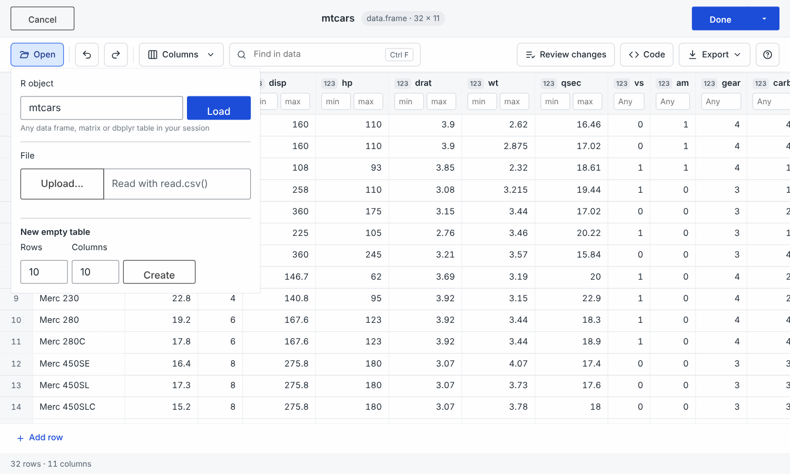
3. Data Manipulation
data_edit() provides a variety of spreadsheet-style
tools to edit your data. We will explore the use of each of these tools
below. Many of them can be reached through the keyboard; press
? inside the data editor or click the ? button
in the toolbar to see the full list of shortcuts.
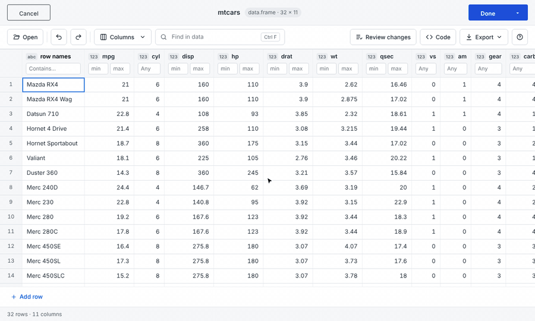
3.1 Edit cells
Double-click a cell to edit it, then press Enter to save
the new value or Esc to cancel. Values are checked against
the type of the column: numbers are stored as numbers, dates as dates
and TRUE/FALSE as logicals. Typing
NA or clearing a cell stores a missing value.
If you type something that does not fit a number or date column,
data_edit() asks what you would like to do instead of
silently converting the whole column to text. You can store a missing
value, convert the column to text or cancel the edit.
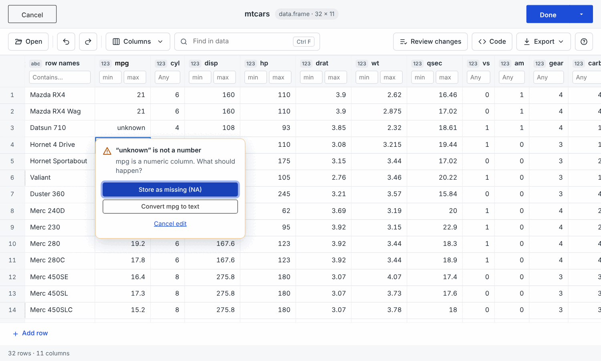
3.2 Select, copy, paste, clear and fill
Click and drag (or Shift + click) to select a range of
cells. The status bar shows the sum, mean and count of the selected
numbers, just like a spreadsheet. Selected cells can be copied
(Ctrl+C) and pasted (Ctrl+V) within the data
editor or to and from other software such as Excel, cleared with
Delete, or filled down with the value in the first row of
the selection (Ctrl+D). A paste, fill or clear is a single
step that can be undone. Click a column header to select the whole
column.
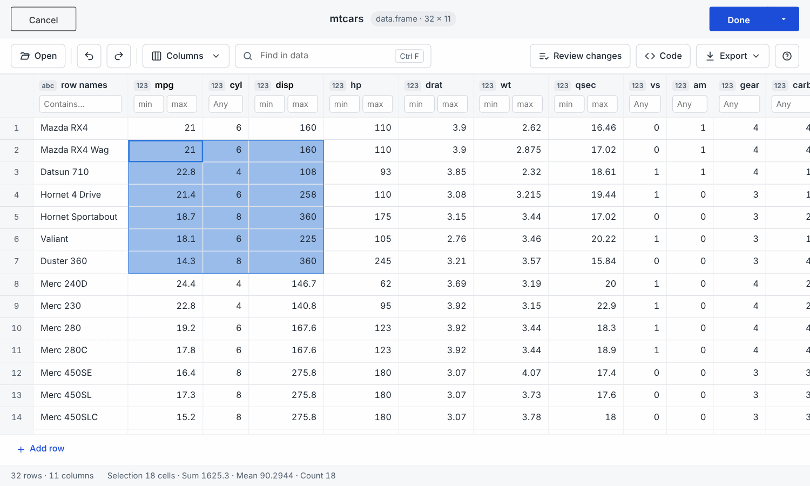
3.3 Undo and redo
Every change can be undone with Ctrl+Z (or the undo
button in the toolbar) and redone with Ctrl+Y. This
includes edits, pasted ranges, added or removed rows and columns,
renamed columns and changes reverted from the review panel.
3.4 Addition or removal of rows or columns
Rows or columns can be added to the data from within the data editor by right clicking on a cell or a column header. This will display a context menu with the options to insert rows above or below, delete the selected rows, fill down, or rename, insert, hide or delete columns.
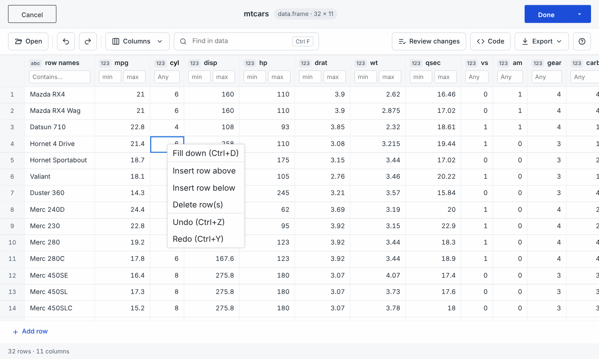

New rows can also be added to the end of the data with the
+ Add row button under the grid, and new columns with the
+ button after the last column header. New columns start
empty and their type is worked out from the values you enter when the
data is returned.
To prevent users from adding or removing rows or columns, set
row_edit = FALSE or col_edit = FALSE
respectively.
data_edit(mtcars,
row_edit = FALSE,
col_edit = FALSE)3.5 Rename rows or columns
data_edit() has full support for editing row and column
names. Double-click a column header (or choose
Rename column from its menu) to rename it; the new name
must be unique and cannot be empty. Row names are edited like any other
cell in the row names column. The row indices cannot be
edited.
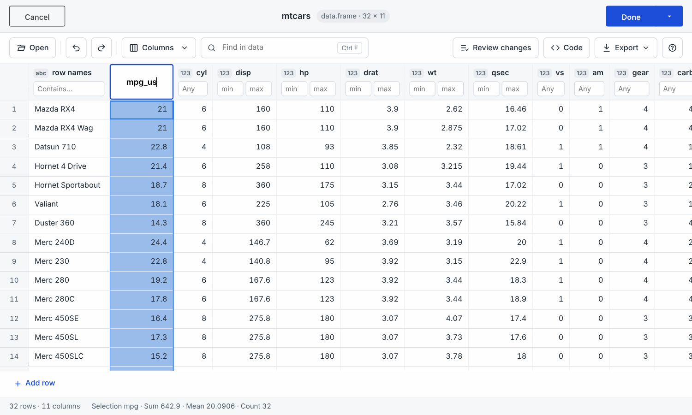
To prevent users from editing column names, set
col_names = FALSE or supply the names of the columns that
cannot be renamed. For example, if we only wanted to prevent users from
renaming the mpg column:
data_edit(mtcars,
col_names = "mpg")3.6 Resize columns
To resize columns, go to the right-hand border of the header of that column and drag the cursor to the desired width.
3.7 Find values
Press Ctrl+F or click Find in data to
search the rows and columns on screen. The first matching cell is
selected and the number of matches is shown (e.g. 1 of 7);
press Enter to jump to the next match,
Shift+Enter to go back and Esc to clear the
search.
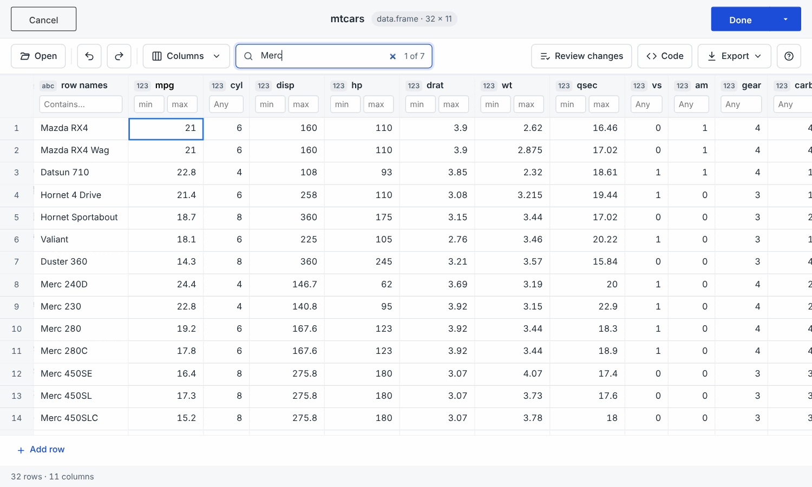
3.8 Append columns or rows
data_edit() can perform rbind and
cbind operations internally to append new rows or columns
to the data prior to editing. The new rows or columns can be supplied as
a matrix or data.frame, a named list or, for empty rows or columns, a
vector of names to the row_bind or col_bind
arguments. If binding both rows and columns, it is important to note
that rows are bound before columns.
# New column to add
new_col <- matrix(rep(NA, nrow(mtcars)),
ncol = 1,
dimnames = list(NULL, "test"))
# Edit data with new column added
data_edit(mtcars,
col_bind = new_col)
# Add two empty rows and an empty column called "notes"
data_edit(mtcars,
row_bind = c("New car 1", "New car 2"),
col_bind = "notes")3.9 Read-only and hidden columns
If you would like to prevent values from being edited in certain
columns, you can supply the names of the columns that cannot be edited
to the col_readonly argument. Read-only columns show a lock
next to their name, and their values and names cannot be changed. For
example, if we wanted to prevent the mpg column from being
edited:
data_edit(mtcars,
col_readonly = "mpg")Columns that users should not see at all can be supplied to
col_hide. Hidden columns cannot be viewed or edited, but
they are kept in place in the returned data.
3.10 Factor columns
data_edit() fully supports data frames with factor
columns. Factor columns are converted to character for editing so that
you can freely enter new values without encountering errors. When the
editor is closed, character columns are converted to factors if
col_factor = TRUE is set.
# Create data with factor column
df <- data.frame(
name = c("Alice", "Bob", "Charlie"),
group = factor(c("A", "B", "A"))
)
# Edit - factor columns are handled automatically
df_edited <- data_edit(df, col_factor = TRUE)4. Data Creation
You can also use data_edit() to interactively create
data.frames from scratch without any coding.
4.1 Start with empty template
If no data is supplied to data_edit() an empty
data.frame will be constructed with 10 rows and columns. You can then
build your data.frame from scratch by adding new rows and columns and
annotating the cells.
The dimensions of the template can be controlled by supplying a
vector of the form c(nrow, ncol) to indicate the number of
rows and columns to use.
4.2 Start with a labelled template
Alternatively, you can pass a vector of column names to create a
data.frame template with pre-defined column names. Use
+ Add row to add as many rows as you need.
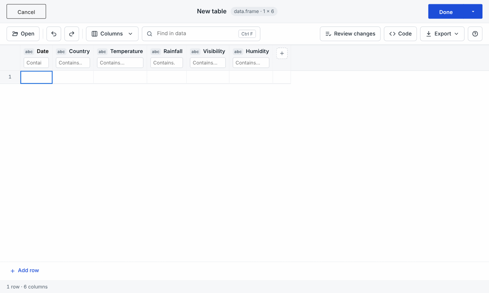
The columns of a template are typed automatically when the data is returned, so a column in which you only entered numbers is returned as a numeric column.
5. Data Filtering
data_edit() makes it easy to view and edit a subset of
your data: filter rows by typing under the column headers and show or
hide columns from the Columns menu. Edits made to a subset
are applied directly to the complete dataset.
5.1 Row filtering
Every column has a filter box under its name and the box depends on the type of the column:
-
numbers have
minandmaxboxes to keep values within a range; -
columns with a few distinct values
(e.g.
cylorgear) have a list to pick one or more values (Anymeans no filter); - text columns keep values that contain what you type.
Rows must match every filter to be shown. Active filters are listed
as chips in the toolbar; click the x on a chip to remove
that filter or Clear filters to remove them all. The status
bar shows how many of the rows are on screen.
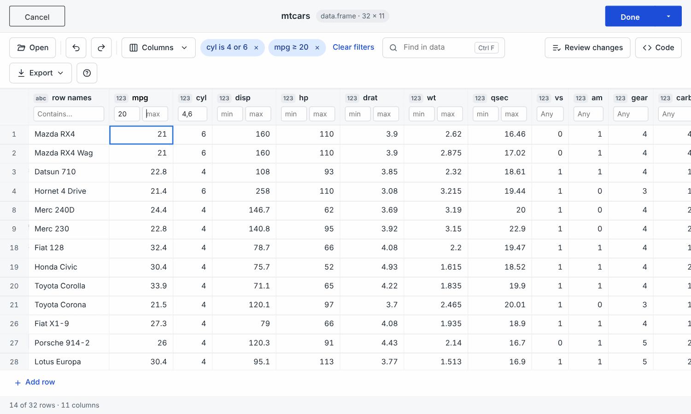
5.2 Column selection
Click Columns in the toolbar to show or hide columns, or
choose Hide column from the menu of a column header.
Show all and Hide all change every column at
once, and the button shows how many columns are visible.
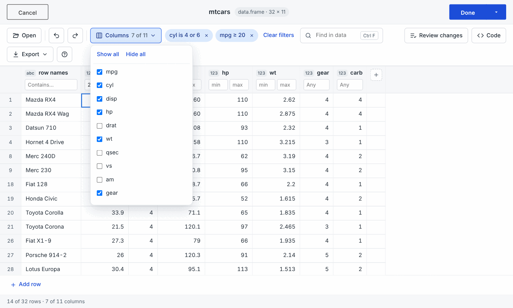
5.3 Edits apply to the complete dataset
Filtered rows and hidden columns are only views onto your data, so any change you make while a filter is active is made directly to the complete dataset, without requiring any additional action. Rows added while a filter is active stay visible until the filters change.
5.4 Return or export data subsets
data_edit() will return the complete dataset as an R
object for downstream use by default. If you would like to return just
the rows and columns that are on screen, open the menu next to the
Done button and choose Only what's on screen
before pressing Done. The menu shows the size of the data
that each option returns.
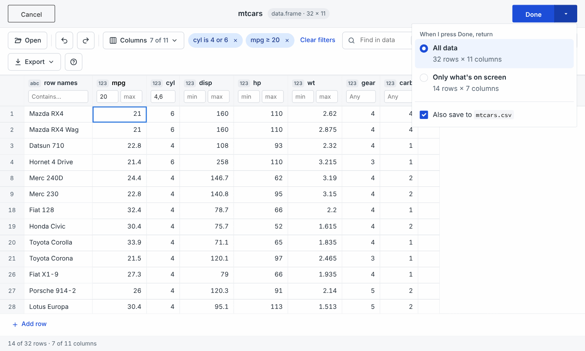
#> 'data.frame': 14 obs. of 7 variables:
#> $ mpg : num 21 21 22.8 21.4 24.4 22.8 32.4 30.4 33.9 21.5 ...
#> $ cyl : num 6 6 4 6 4 4 4 4 4 4 ...
#> $ disp: num 160 160 108 258 147 ...
#> $ hp : num 110 110 93 110 62 95 66 52 65 97 ...
#> $ wt : num 2.62 2.88 2.32 3.21 3.19 ...
#> $ gear: num 4 4 4 3 4 4 4 4 4 3 ...
#> $ carb: num 4 4 1 1 2 2 1 2 1 1 ...6. Data Saving
data_edit() will automatically return the edited data
with appropriate column classes as an R object for use within R.
Matrices, tibbles and data.tables are returned with their original
class, and the type of each column is kept: numbers stay numbers, dates
stay dates and text that looks like a number (e.g. "001")
stays text. Character columns are not converted to factors by default,
but this can be changed by setting col_factor = TRUE.
# Add character column
mtcars_new <- cbind(rownames(mtcars), mtcars)
colnames(mtcars_new)[1] <- "car"
# Convert characters to factors
mtcars_new <- data_edit(mtcars_new,
col_factor = TRUE)
str(mtcars_new)#> 'data.frame': 32 obs. of 12 variables:
#> $ car : Factor w/ 32 levels "AMC Javelin",..: 18 19 5 13 14 31 7 21 20 22 ...
#> $ mpg : num 21 21 22.8 21.4 18.7 18.1 14.3 24.4 22.8 19.2 ...
#> $ cyl : num 6 6 4 6 8 6 8 4 4 6 ...
#> $ disp: num 160 160 108 258 360 ...
#> $ hp : num 110 110 93 110 175 105 245 62 95 123 ...
#> $ drat: num 3.9 3.9 3.85 3.08 3.15 2.76 3.21 3.69 3.92 3.92 ...
#> $ wt : num 2.62 2.88 2.32 3.21 3.44 ...
#> $ qsec: num 16.5 17 18.6 19.4 17 ...
#> $ vs : num 0 0 1 1 0 1 0 1 1 1 ...
#> $ am : num 1 1 1 0 0 0 0 0 0 0 ...
#> $ gear: num 4 4 4 3 3 3 3 4 4 4 ...
#> $ carb: num 4 4 1 1 2 1 4 2 2 4 ...The edited data can also be written to a file of any format by
specifying the name of the file to the save_as argument and
specifying the name of the writing function to use through
write_fun. The default is to use write.csv
from the utils package. You can also pass any additional
arguments to your write function in a named list to
write_args. The data will be written to file when the
Done button is selected; untick Also save to
in the Done menu to close the editor without saving.
mtcars_new <- data_edit(mtcars,
save_as = "mtcars.csv",
write_fun = "write.table",
write_args = list(sep = ",",
row.names = TRUE))Alternatively, data can be downloaded to file at any time from the
Export menu in the toolbar, either all data or only what is
on screen. Files are named after save_as (with
-subset added for subsets), or after today’s date if
save_as is not supplied, and are written with
write_fun and write_args.

7. Complex user inputs
data_edit() can also be used to accept complex inputs
from users and these inputs can be restricted by adding columns with
checkboxes, dropdown menus, date pickers or password fields. To use this
feature, the options for the columns must be supplied in a named list
through the col_options argument. Columns with options can
still be renamed, and users can still add or remove other columns.
7.1 Checkboxes
Checkboxes can be used to obtain TRUE or
FALSE value inputs from users. Double-click a checkbox cell
to change its value; ticked cells are returned as TRUE.
7.2 Dropdown menus
Dropdown menus can be used to help prevent typing errors when a set
number of options are available for a column. For example, if we have a
factor with levels Treatment-A, Treatment-B or
Treatment-C it would be easier to select these options from
a dropdown menu instead of having to manually type them. Dropdown menus
can be added in the same way as checkboxes.
# Add column for car colour
data_edit(mtcars,
col_bind = "colour",
col_options = list(colour = c("red",
"blue",
"orange",
"green",
"black")))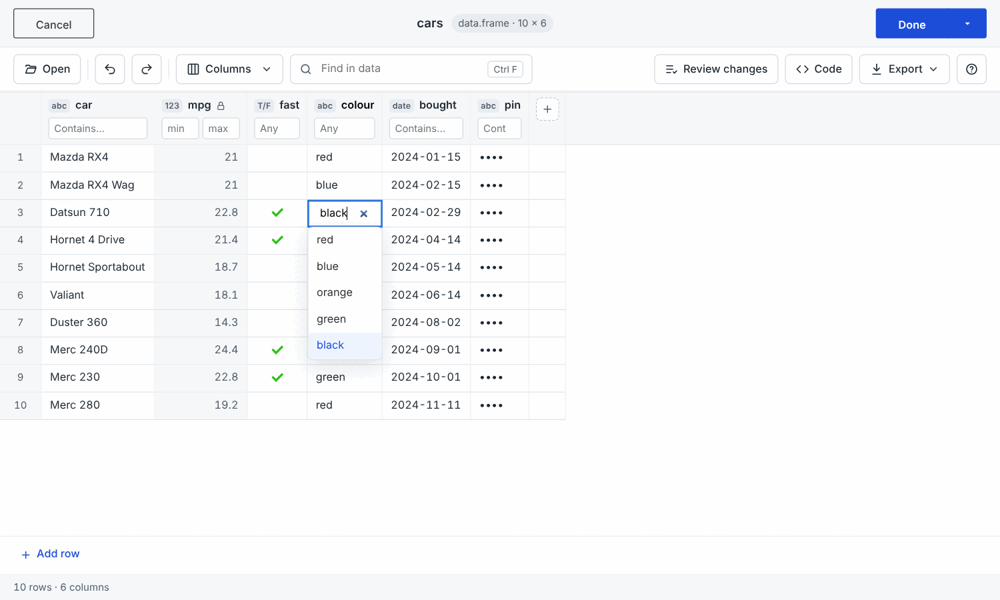
7.3 Dates
Dates can be entered interactively by selecting the relevant day from
a calendar. To convert a column to accept interactive date inputs,
supply a list with the name of the column and "date" as the
option to col_options. The column is returned as a
Date column.
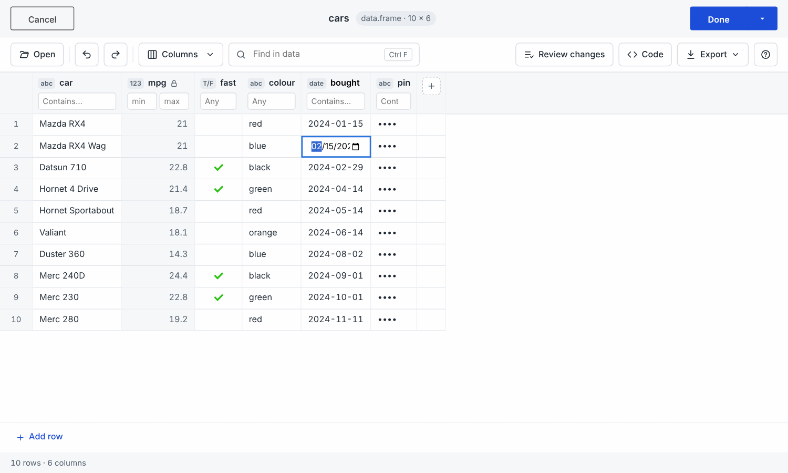
7.4 Passwords
If you would like to keep your data entries a secret, you can convert
relevant columns to accept passwords as inputs. The data is entered as
per usual, but the values are displayed as dots to conceal the entered
data. To convert a column to accept password inputs, supply a list with
the name of the column and "password" as the option to
col_options.
8. Customisation
data_edit() has been designed to be simple, but does
come with some customisation options including column stretching,
addition of logos and/or titles, custom themes and the option to hide
the menus.
8.1 Stretch columns to fill page
If you would like to make full use of the space available to you, you
can set col_stretch = TRUE to stretch the columns to fill
the full width of the display.
data_edit(iris,
col_stretch = TRUE)
8.2 Logo and title
data_edit() does also have support for adding a logo
and/or title to the data editor. For example, if you wanted to use
data_edit() within your own package you can customise it
with your package logo (the path or URL of an image) and
instructions to the user through title. Use
logo_size to set the width of the logo in pixels and
logo_side to place it on the "left" or
"right" of the title.
logo <- "https://raw.githubusercontent.com/DillonHammill/DataEditR/master/man/figures/logo.png"
data_edit(mtcars,
logo = logo,
logo_size = 26,
title = "Car data")8.3 Custom themes
data_edit() uses Bootstrap 5 through the
bslib package. You can explore the different themes by
supplying the name of a Bootswatch
theme to the theme argument. Alternatively, you can create
your own custom bs_theme and supply that object to
theme instead.
# Preset theme
data_edit(
mtcars,
theme = "flatly"
)
# Custom theme
library(bslib)
custom_theme <- bs_theme(
version = 5,
primary = "#7C3AED",
base_font = font_google("Lato")
)
data_edit(
mtcars,
theme = custom_theme
)
8.4 Simplified editor
Set hide = TRUE to hide the Open and
Export menus and the options of the Done
button, for example when data_edit() is used to collect
data from users. When save_as is supplied the data is still
written to file when Done is pressed.
9. Reviewing and tracking changes
data_edit() keeps track of every change you make, so you
can see what has changed before you hit Done and revert any
change on its own.
9.1 Review changes
The status bar summarises your changes
(e.g. 2 cells edited · 1 row added) and the
Review changes button shows how many changes there are.
Click it to open the review panel, which lists every edited, added,
removed or renamed cell, row and column with its old and new value.
Click the name of a row to jump to it in the grid, Revert
(or Remove / Restore) to undo that one change,
or Revert all to go back to the original data. Reverts can
be undone with Ctrl+Z like any other change.
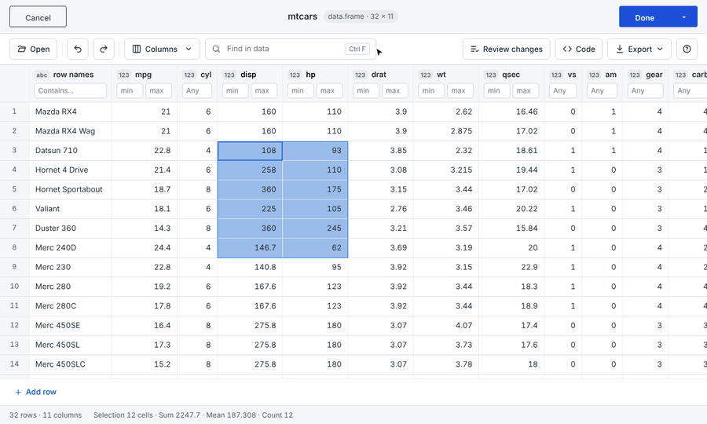
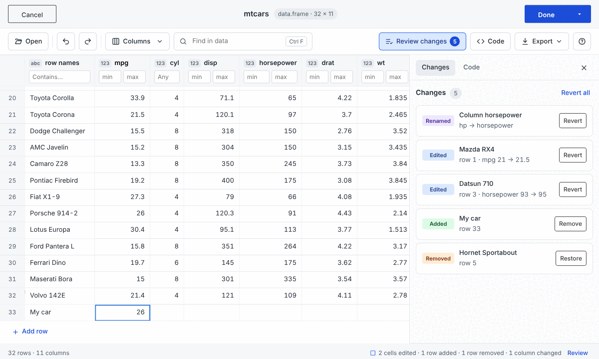
9.2 Highlight changed cells
Set track = TRUE to highlight cells that have been
edited or added compared to the original data with a blue tint. Any cell
whose value differs from the original, as well as all cells in newly
added rows or columns, will be highlighted. Highlights follow undo, redo
and reverts, and inserting rows or columns does not cause other cells to
appear changed.
data_edit(mtcars,
track = TRUE)
You can pass any valid CSS color to track to customise
the highlight colour. For example, to use red:
data_edit(mtcars,
track = "red")10. Keyboard shortcuts
| Action | Shortcut |
|---|---|
| Edit cell | Double-click |
| Save / cancel edit |
Enter / Esc
|
| Undo / redo |
Ctrl+Z / Ctrl+Y
|
| Select a range | Click and drag, Shift+click |
| Copy / paste range |
Ctrl+C / Ctrl+V
|
| Clear selected cells | Delete |
| Fill down | Ctrl+D |
| Find in data |
Ctrl+F, then Enter /
Shift+Enter
|
| Rename column | Double-click header |
| Row and column menus | Right-click |
| Show the shortcuts | ? |
Use Cmd instead of Ctrl on a Mac.

11. RStudio Add-in
DataEditR also ships with an RStudio add-in should you
prefer to interact with your data in this way. Simply highlight the name
of a dataset in an active script or the console and select
Interactive Data Editor from the list of
Addins in your RStudio session. If nothing is highlighted,
an empty table is opened instead. The add-in can be bound to a keyboard
shortcut through
Tools > Modify Keyboard Shortcuts....
12. Databases
data_edit() can also edit tables stored in a database.
Connect with DBI, pass a dbplyr lazy table
(optionally filtered) to data_edit() and the rows are
loaded into the editor. Changes are staged while you edit and written to
the database in a single transaction when you press Done
and confirm the summary of changes.
library(dplyr)
con <- DBI::dbConnect(RSQLite::SQLite(), "cars.sqlite")
data_edit(tbl(con, "cars") %>% filter(cyl == 6))
The same editor can be added to your own shiny apps, where
dataEditCommit() writes the changes to the database (for
example when a Save button is pressed) and
dataEditChanges() summarises what will be written. See
vignette("databases", package = "DataEditR") for how to
connect to different databases, how rows are matched to the database,
saving changes from shiny apps and what happens when someone else
changes the data while you are editing it.
13. Interactively Edit Googlesheets
DataEditR can also be used to interactively edit
googlesheets using googlesheets4. Simply authorise
googlesheets4, create a new sheet, edit the data using
data_edit() and write the edited data to the created
sheet.
library(googlesheets4)
# Authorise
gs4_auth(
email = "username@gmail.com"
)
# Create a sheet
ss <- gs4_create(
"mtcars"
)
# Edit data
mtcars_new <- data_edit(
mtcars,
save_as = ss,
write_fun = "write_sheet",
write_args = list(sheet = "mtcars")
)14. Exporting Code
For reproducibility, it is possible to export the code required to
generate the final edited version of your data. The generated code uses
tidyverse-style dplyr verbs to transform the original data
into the edited version.
14.1 See the code as you edit
Click Code in the toolbar to see the code that
reproduces your edits so far. The code updates as you edit and can be
copied with the Copy button.

14.2 Print code to console
Set code = TRUE within data_edit() to print
the generated code to the console when you press Done. The
code uses dplyr verbs such as rename(),
select(), mutate(), slice(), and
tibble::add_row() to replicate your edits. Copying and
pasting this code into the console will recreate the edited version of
your data.
data_edit(mtcars,
code = TRUE)For example, renaming a column, modifying a cell value, removing a row and adding a new row might produce code like:
library(dplyr)
mtcars <- mtcars %>%
tibble::rownames_to_column(var = ".rownames") %>%
rename(horsepower = hp) %>%
slice(-5) %>%
mutate(
mpg = replace(mpg, 1, 21.5),
horsepower = replace(horsepower, 3, 95)
) %>%
tibble::add_row(.rownames = "My car", mpg = 26, cyl = NA, disp = NA,
horsepower = NA, drat = NA, wt = NA, qsec = NA, vs = NA,
am = NA, gear = NA, carb = NA) %>%
tibble::column_to_rownames(var = ".rownames")For database tables the code uses rows_update(),
rows_append() and rows_delete() to make the
same changes to the database.
14.3 Save code to file
Alternatively, users can get DataEditR to automatically
create a new R script to store this code by providing a name for the R
script to code. For example, the below code creates a new R
script called mtcars_edit.R and inserts the code required
to programmatically generate the final edited version of your data.
data_edit(mtcars,
code = "mtcars_edit.R")14.4 Using data_code() directly
The data_code() function can also be used outside of
data_edit() to generate code from any pair of original and
edited data frames:
library(DataEditR)
# Original data
x <- data.frame(
A = c(1, 2, 3),
B = c("x", "y", "z"),
stringsAsFactors = FALSE
)
# Edited data (changed a value and renamed a column)
x_edit <- data.frame(
A = c(1, 5, 3),
Beta = c("x", "y", "z"),
stringsAsFactors = FALSE
)
# Generate code
cat(data_code(x, x_edit, name = "x"))
#> library(dplyr)
#>
#> x <- x %>%
#> rename(Beta = B) %>%
#> mutate(A = replace(A, 2, 5))15. Shiny modules
The data editor is also available as a shiny module, so you can add
an editable table to your own shiny applications with
dataEditUI() and dataEditServer():
library(shiny)
library(DataEditR)
ui <- fluidPage(
dataEditUI("edit")
)
server <- function(input, output, session) {
edited <- dataEditServer("edit", data = reactive(mtcars))
observe(print(head(edited())))
}
shinyApp(ui, server)Call dataEditCommit(edited) (for example when a
Save button is pressed) to save the changes: for database
tables this writes them to the database, and for other data the current
data becomes the new starting point for the review panel.
dataEditChanges(edited) returns the number of changes that
have not been saved yet, e.g. to enable the Save button only
when there is something to save. See
vignette("shiny-modules", package = "DataEditR") for the
options of the module, saving changes and how it works with the other
modules in DataEditR.
Summary
DataEditR is a powerful and interactive tool to make your data viewing, entry, filtering and editing as seamless as possible. If you need any help or encounter any issues with DataEditR please let me know by posting an issue on GitHub.